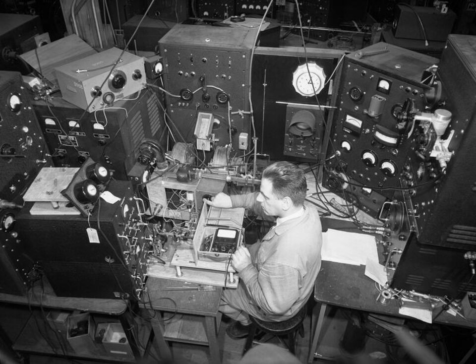
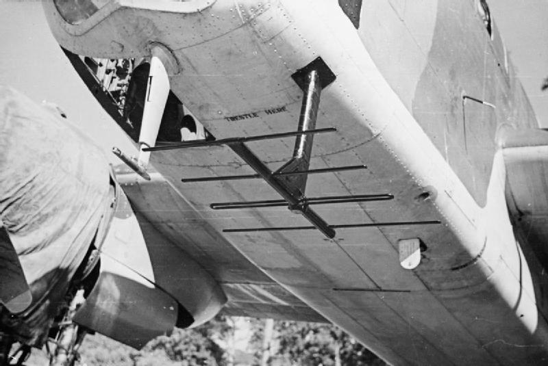
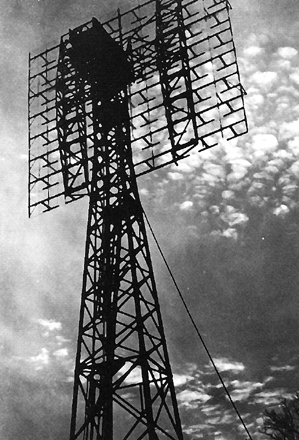

New Uses During and After the War
Radar's use spread beyond Britain's coastal warning stations during the war. At MIT's Radiation Laboratory, researchers worked on radar systems for aircraft and ships. Their work included equipment for finding vessels and helping aircraft land when pilots could not see clearly.



Allied aircraft used microwave radar to find German submarines on the surface. This helped protect ships carrying supplies across the Atlantic. Radar gave crews another way to search when darkness made looking for submarines harder.



Radar also helped bombers navigate through clouds, but early radar images lacked detail. The radar chart discussed by the National Air and Space Museum shows a mission on February 15, 1945. Clouds hid the original targets, and bombers diverted to Dresden. For air crews, radar made navigation possible in poor weather. For civilians below, its use could add to the destruction of a city.
This shows why radar's effects should include more than military success. A tool that helped defend one country could also help attack another.
In January 1946, John DeWitt's team sent radar signals to the Moon and received echoes. His article described hopes for future communication in space. The experiment showed that wartime radar knowledge could support new scientific work. His predictions show what he hoped radar would do. The Moon echo itself is evidence of what the team achieved.



“radar has presented a means of control and communication well in advance of man's ability to project himself in space.”